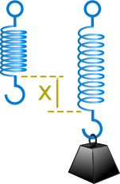
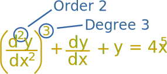

Differential Equations
A Differential Equation is an equation with a function and one or more of its derivatives:

Example: an equation with the function y and its
derivative
dy
dx
Solving
We solve it when we discover the function y (or set of functions y).
There are many "tricks" to solving Differential Equations (if they can be solved!).
But first: why?
Why Are Differential Equations Useful?
In our world things change, and describing how they change often ends up as a Differential Equation:

Example: Rabbits!
The more rabbits we have the more baby rabbits we get.
Then those rabbits grow up and have babies too! The population will grow faster and faster.
The important parts of this are:
- the population N at any time t
- the growth rate r
- the population's rate of change dNdt
Think of dNdt as "how much the population changes as time changes, for any moment in time".
Let us imagine the growth rate r is 0.01 new rabbits per week for every current rabbit.
When the population is 1000, the rate of change dNdt is then 1000×0.01 = 10 new rabbits per week.
But that is only true at a specific time, and doesn't include that the population is constantly increasing. The bigger the population, the more new rabbits we get!
When the population is 2000 we get 2000×0.01 = 20 new rabbits per week, etc.
So it is better to say the rate of change (at any instant) is the growth rate times the population at that instant:
dNdt = rN
And that is a Differential Equation, because it has a function N(t) and its derivative.
And how powerful mathematics is! That short equation says "the rate of change of the population over time equals the growth rate times the population".
Differential Equations can describe how populations change, how heat moves, how springs vibrate, how radioactive material decays and much more. They are a very natural way to describe many things in the universe.
What To Do With Them?
On its own, a Differential Equation is a wonderful way to express something, but is hard to use.
So we try to solve them by turning the Differential Equation into a simpler equation without the differential bits, so we can do calculations, make graphs, predict the future, and so on.

Example: Compound Interest
Money earns interest. The interest can be calculated at fixed times, such as yearly, monthly, etc. and added to the original amount.
This is called compound interest.
But when it is compounded continuously then at any time the interest gets added in proportion to the current value of the loan (or investment).
And as the loan grows it earns more interest.
Using t for time, r for the interest rate and V for the current value of the loan:
dVdt = rV
And here is a cool thing: it is the same as the equation we got with the Rabbits! It just has different letters. So mathematics shows us these two things behave the same.
Solving
The Differential Equation says it well, but is hard to use.
But don't worry, it can be solved (using a special method called Separation of Variables) and results in:
V = Pert
Where P is the Principal (the original loan), and e is Euler's Number.
So a continuously compounded loan of $1,000 for 2 years at an interest rate of 10% becomes:
So Differential Equations are great at describing things, but need to be solved to be useful.
More Examples of Differential Equations
The Verhulst Equation
Example: Rabbits Again!
Remember our growth Differential Equation:
dNdt = rN
Well, that growth can't go on forever as they will soon run out of available food.
So let's improve it by including:
- the maximum population that the food can support k
A guy called Verhulst figured it all out and got this Differential Equation:
dNdt = rN(1−N/k)
The Verhulst Equation
Simple Harmonic Motion
In Physics, Simple Harmonic Motion is a type of periodic motion where the restoring force is directly proportional to the displacement. An example of this is given by a mass on a spring.

Example: Spring and Weight
A spring gets a weight attached to it:
- the weight gets pulled down due to gravity,
- as the spring stretches its tension increases,
- the weight slows down,
- then the spring's tension pulls it back up,
- then it falls back down, up and down, again and again.
Describe this with mathematics!
The weight is pulled down by gravity, and we know from Newton's Second Law that force equals mass times acceleration:
F = ma
And acceleration is the second derivative of position with respect to time, so:
F = m d2xdt2
The spring pulls it back up based on how stretched it is (k is the spring's stiffness, and x is how stretched it is): F = -kx
The two forces are always equal:
m d2xdt2 = −kx
We have a differential equation!
It has a function x(t), and it's second derivative d2x dt2
Note: we haven't included "damping" (the slowing down of the bounces due to friction), which is a little more complicated, but you can play with it here (press play):
Creating a differential equation is the first major step. But we also need to solve it to discover how, for example, the spring bounces up and down over time.
Classify Before Trying To Solve
So how do we solve them?

It isn't always easy!
Over the years wise people have worked out special methods to solve some types of Differential Equations.
So we need to know what type of Differential Equation it is first.
It is like travel: different kinds of transport have solved how to get to certain places. Is it near, so we can just walk? Is there a road so we can take a car? Or is it in another galaxy and we just can't get there yet?
So let us first classify the Differential Equation.
Ordinary or Partial
The first major grouping is:
- "Ordinary Differential Equations" (ODEs) have a single independent variable (like y)
- "Partial Differential Equations" (PDEs) have two or more independent variables.
We are learning about Ordinary Differential Equations here!
Order and Degree
Next we work out the Order and the Degree:

Order
The Order is the highest derivative (is it a first derivative? a second derivative? etc):
Example:
dydx + y2 = 5x
It has only the first derivative dy dx , so is "First Order"
Example:
d2ydx2 + xy = sin(x)
This has a second derivative d2y dx2 , so is "Order 2"
Example:
d3ydx3 + xdydx + y = ex
This has a third derivative d3y dx3 which outranks the dy dx , so is "Order 3"
Degree
The degree is the exponent of the highest derivative.
Example:
(dydx)2 + y = 5x2
The highest derivative is just dy/dx, and it has an exponent of 2, so this is "Second Degree"
In fact it is a First Order Second Degree Ordinary Differential Equation
Example:
d3ydx3 + (dydx)2 + y = 5x2
The highest derivative is d3y/dx3, but it has no exponent (well actually an exponent of 1 which is not shown), so this is "First Degree".
(The exponent of 2 on dy/dx does not count, as it is not the highest derivative).
So it is a Third Order First Degree Ordinary Differential Equation
Be careful not to confuse order with degree. Some people use the word order when they mean degree!
Linear
It is Linear when the variable (and its derivatives) has no exponent or other function put on it.
So no y2, y3, √y, sin(y), ln(y) etc,
just plain y (or whatever the variable is)
More formally a Linear Differential Equation is in the form:
dydx + P(x)y = Q(x)
Solving
OK, we have classified our Differential Equation, the next step is solving.
And we have a Differential Equations Solution Guide to help you.